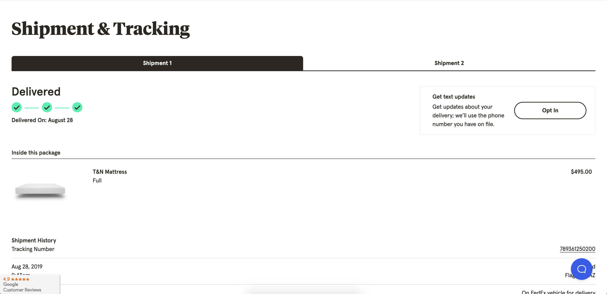

Tuft & Needle Tracking Page
This was my first individual React project, meaning I didn't have a pair working with me.
I used componentDidMount() to to construct the URL, set the initial State, and update the text message opt in/out box. To make the POST request I used Axios. Finally, I used date-fns to convert and format timestamps in different ways in multiple locations on the page.
One challenging aspect about this project was pinning down a completion date. I had to move the date back a few times. This was due to my inexperience as well as me not being present during the planning portion of it. Another challenge was in creating the tabs and dropdown components. They were recycled from a company UI Kit that hadn't been "Reactified" yet so that job landed in my lap.
The issue was in my making the callback to the active index. The dropdown was slightly different from the tabs due to it being a <select> element and having <option> elements inside.
I also had to create a Picture Component based on a UI Kit mixin utilizing the <picture> element. Using Props I was able to set an image path and alt attribute text.
I learned a lot during this project and if I had to take one thing away from this project it would be to not give a firm completion date until I am at least 90% sure it's right. Along those lines, making sure I try to ask questions until I understand as much as possible before giving an estimation.